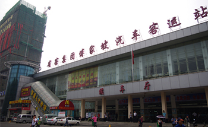

傅家坡客运站→长江职业学院

南校区
地铁：
轨道交通二号线→长职南校区
起点：傅家坡客运站
步行895米至地铁二号线中南路站
从中南路上车（C2口进）至光谷广场（6站）下车（C口出）末班车 22：30
南行600米即到。
公交：
715路→长职南校区
起点：傅家坡客运站
步行44米至武珞路傅家坡客运站公交站
从武珞路傅家坡客运站上车至雄楚大道民族大道口（13站）下车 末班车 22:00
下车即到。
东校区
地铁：
轨道交通二号线→788路→长职东校区
起点：傅家坡客运站
步行895米至地铁二号线中南路站
从中南路上车（C2口进）至光谷广场（6站）下车（C口出）末班车 22：30
步行430米至民族大道光谷广场公交站
换乘788路公交，至光谷一路流芳园路（12站）下车 末班车 21：30
步行809米即到.
公交：
728路/538路→788路→长职东校区
起点：傅家坡客运站
步行31米至武珞路傅家坡客运站公交站
从武珞路傅家坡客运站上车至民族大道光谷广场（10站）下车 末班车 22:00
换乘788路公交，至光谷一路流芳园路（12站）下车 末班车 21：30
步行809米即到.
西校区
地铁：
轨道交通四号线→817路→长职西校区
起点：傅家坡客运站
步行664米至地铁四号线梅苑小区站
从梅苑小区站上车（A口进）至楚河汉街（3站）下车（D口出）末班车 22：30
步行259米至公正路高王村公交站
换乘817路公交，至书城路文祥街（20站）末班车 21:50
步行1.2公里即到。
公交：
320路→长职西校区
起点：傅家坡客运站
步行760米至文安路公交站
乘坐320路公交，至书城路文祥街（12站）下车 末班车 21:40
步行1.2公里即到。